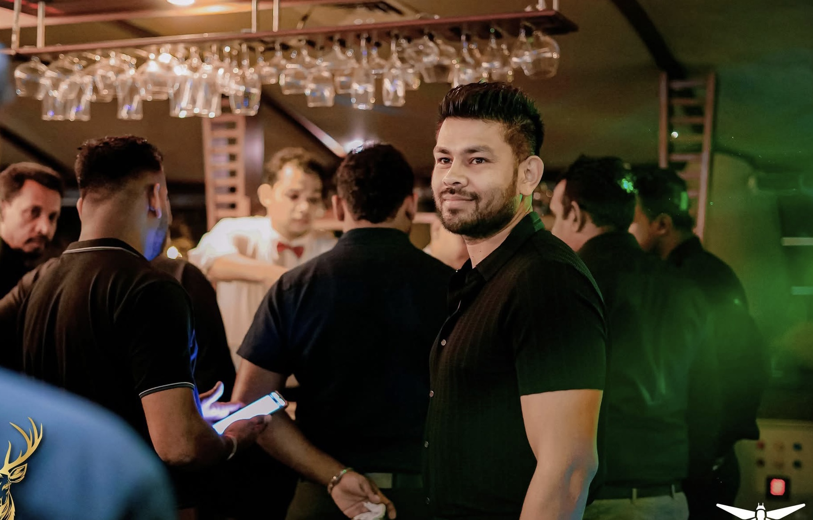

22 September 2020
Iron Arms Sport Club Thalangama was founded.
Strength, discipline and competitive sport. A Sri Lankan sports club based in Malabe, with a focus on Tug of War, fitness, strength and sporting development.
Ramesh Ranaweera Contact ClubIron Arms Sport Club Thalangama was founded on 22 September 2020 and is based in the Malabe area of Sri Lanka.
22 September 2020
Malabe, Sri Lanka
Tug of War
Fitness, strength and competitive sport

Ramesh Ranaweera is identified by Iron Arms Sport Club Thalangama as its Founder and Leader.
According to the club profile, his sporting and professional background includes military service, coaching and participation in multiple competitive sports.
Served in the Sri Lanka Army – Mechanized Infantry Regiment.
Identified by the club as a Sports Ministry licensed/qualified coach.
National Champion – 2010.
Champion – 2011–2019.
Colombo District Champion – 2013.
District-level champion in Backstroke, Freestyle and Butterfly.
The club profile states that he saved 14 lives in sea and river rescue situations.
Identified by the club as a Bank of Ceylon (Lanka Bank) Brand Ambassador and Commercial Model.
Iron Arms Sport Club Thalangama was founded.
A Tug of War Tournament associated with Iron Arms Sports Club was listed in the Sri Lanka sports calendar at Thalangama.
Public reporting documented Iron Arms participation/association with sporting activities including Tug of War and bodybuilding events.